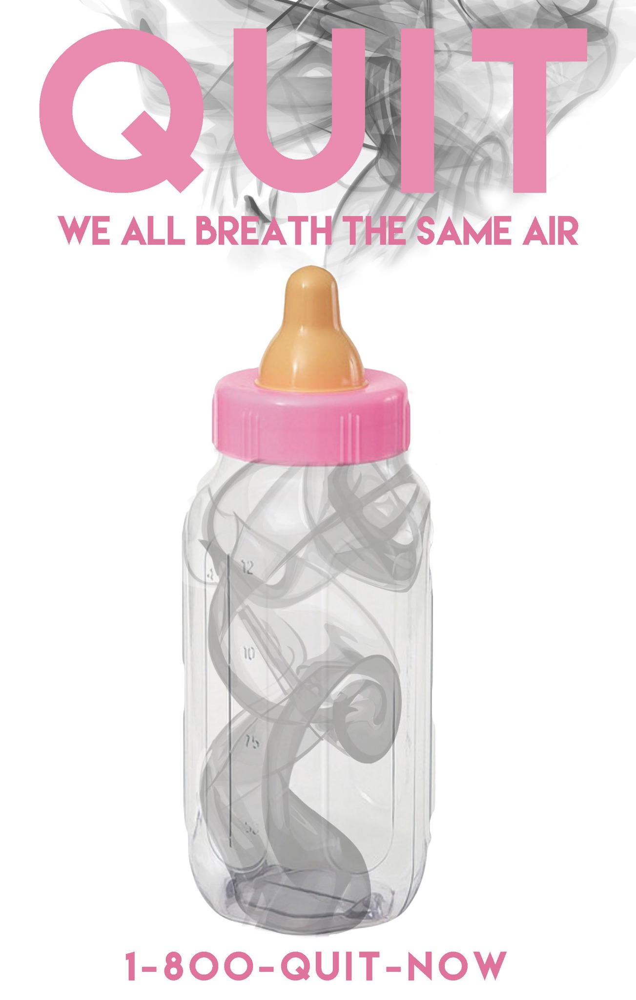
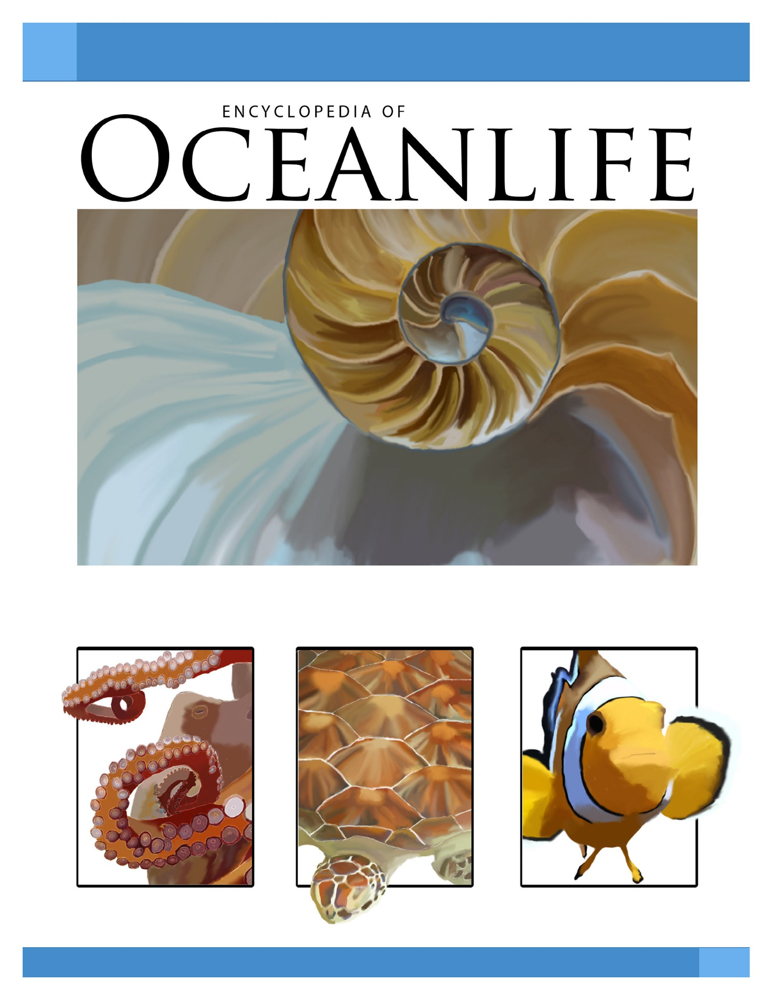
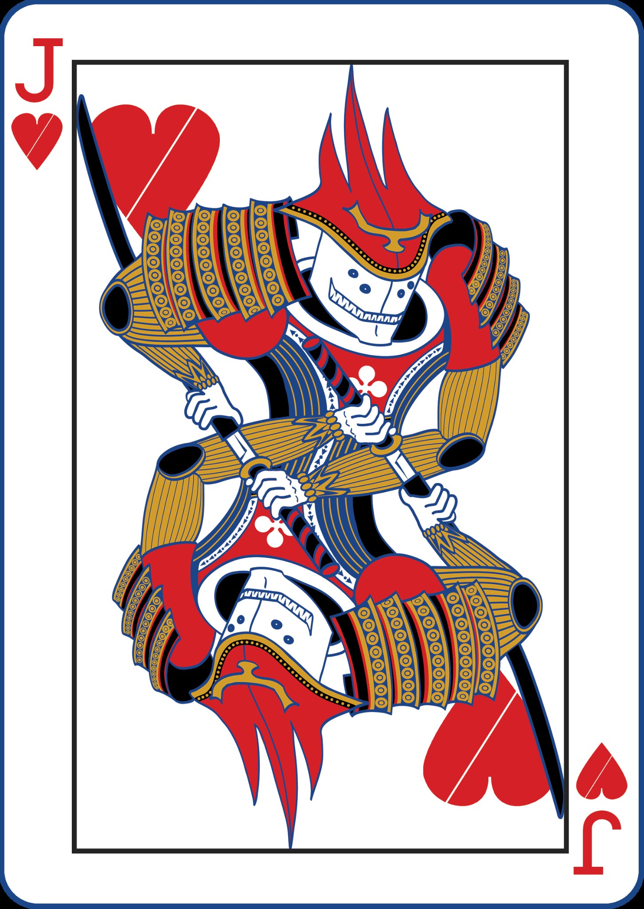
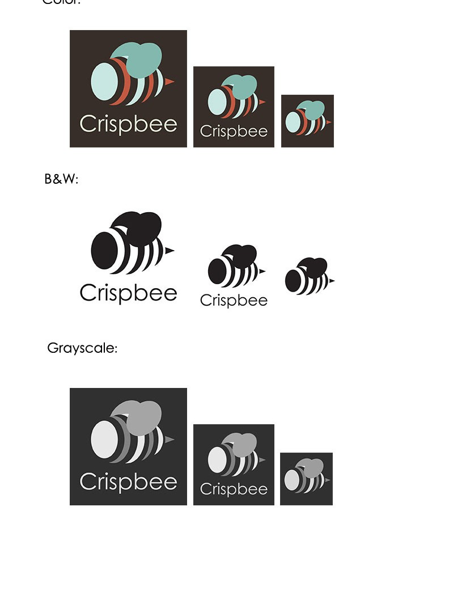

ARCHIVE STUDY / 01
Design Work
Selected project layouts · sample gallery
Four selected projects · six layout placeholders

Quit — Anti-Smoking Poster
Poster Design · Social Awareness

Encyclopedia of Ocean Life
Print Design · Editorial Layout

Playing Cards
Illustration · Design

Crispbee Logo Design
Identity Design
TYPE
01
01
Project 01
Design · Placeholder
Project 02
Composition · Placeholder
Shape
and
Form
and
Form
Project 03
Typography · Placeholder
Project 04
Digital Imaging · Placeholder
COLOR /
Project 05
Color · Placeholder
Project 06
Visual Systems · Placeholder
Demonstration page. Projects 01–06 remain placeholders; the four named projects above use submitted artwork. This layout is informed by the image-first thumbnail grid on the older Adobe Portfolio archive; it does not reproduce student artwork or identifying information.